Plotto
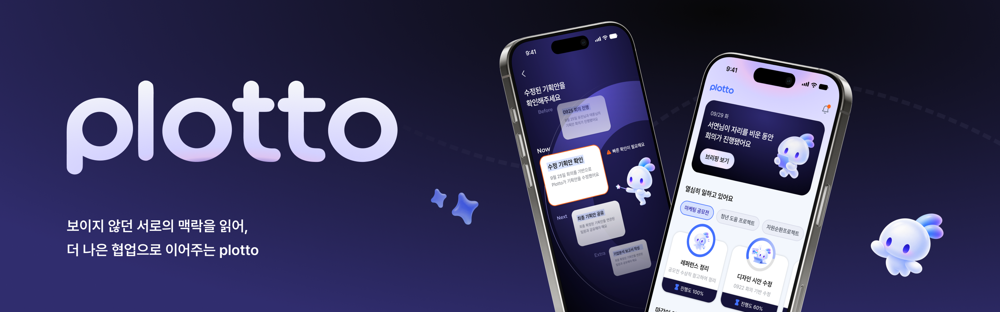
문제정의
최근 업무 환경에서는 AI 도구의 활용이 빠르게 늘고 있습니다. 그러나 사용자는 AI를 사용하는 과정에서 주도권을 잃는 느낌이나 만족도 저하 등 심리적 부담을 경험하기도 합니다. 업무 효율을 높이기 위해서는 이러한 사용자의 심리 상태를 함께 고려해야 한다고 보았고, Agentic AI와 효과적으로 협업할 수 있는 업무 경험을 탐색하기 위한 리서치를 진행했습니다.
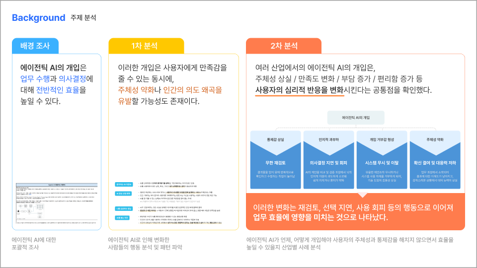
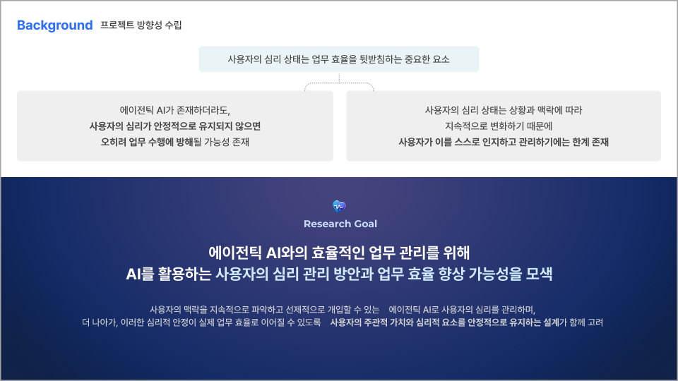
리서치 과정
설문조사와 심층 인터뷰를 통해 AI를 사용하는 사용자의 업무 상황을 조사했습니다. 어피니티 다이어그램, 피시본 다이어그램, 행동 매핑 등으로 수집한 내용을 구조화하며 사용자의 행동과 인사이트들을 시각화했습니다.
분석 과정에서 사용자는 자신의 부족한 부분을 AI가 보완할 때 가장 큰 만족을 느낀다는 점을 발견했습니다. 특히 업무 중 한계를 인지하고 도움이 필요하다고 판단하는 순간을 ‘개입의 순간’으로 정의했고, 이 순간이 단순한 자동화가 아닌 AI와 사용자가 협업해야 하는 핵심 지점이라고 보았습니다.
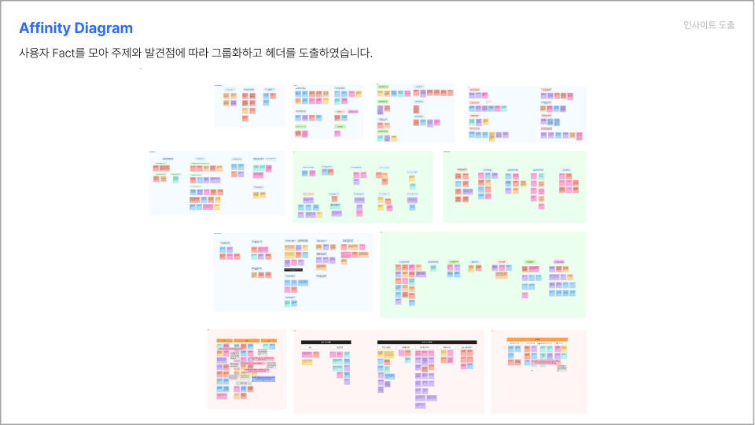
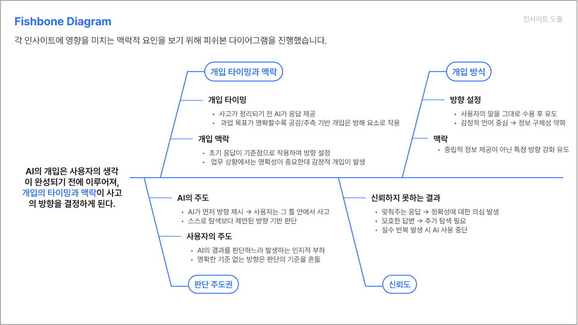
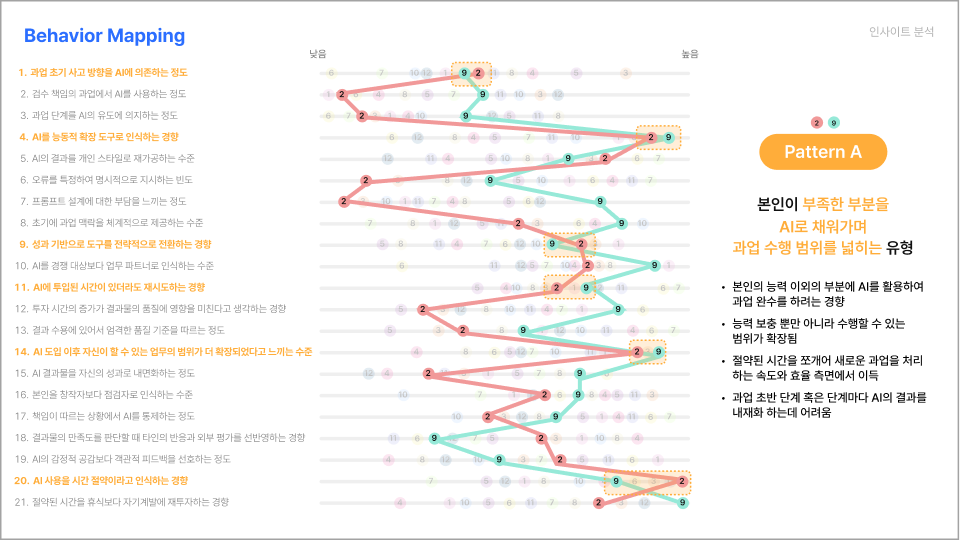
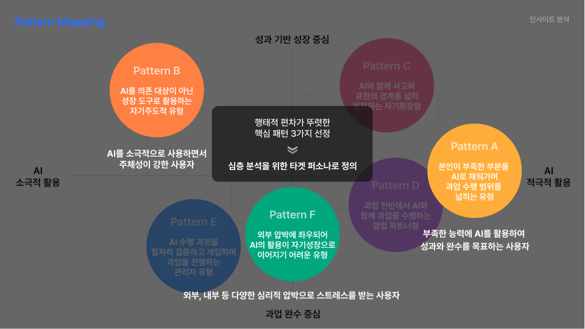
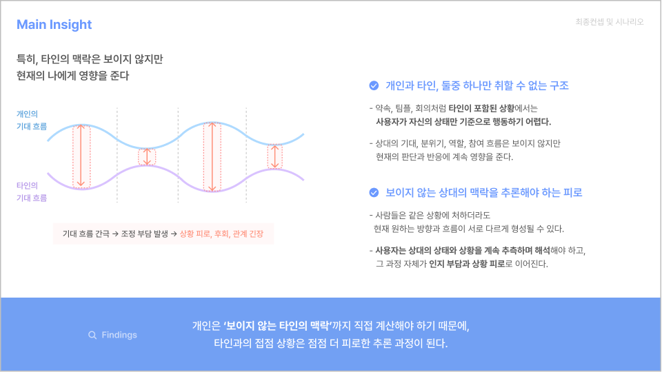
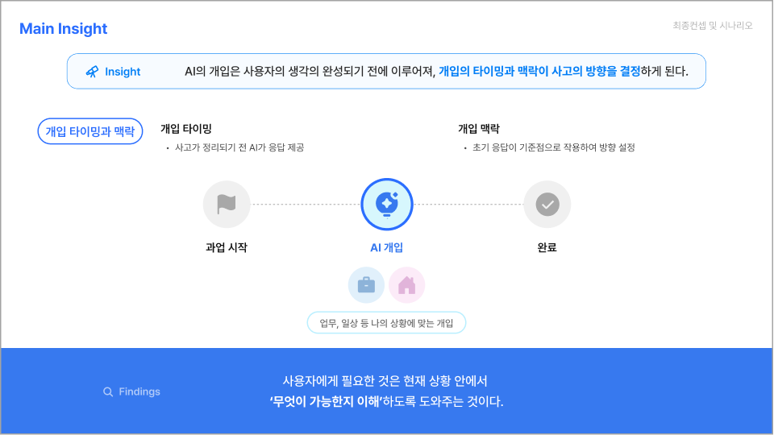
컨셉 도출
사용자가 AI의 개입을 부담이 아닌 협업으로 느끼도록, 서비스 전반에서 AI가 어떤 순간에 어떤 방식으로 도움을 줄지 고민했습니다. 이를 위해 페르소나를 설정하고 업무 시나리오별로 필요한 핵심 기능을 구체화했습니다. AI가 사용자의 상태와 업무 흐름을 감지하고, 맥락을 분석한 뒤 적절한 다음 행동을 제안하는 과정을 하나의 자연스러운 경험으로 연결하고자 했습니다.
또한 정보구조도(IA)를 통해 Agentic AI가 개입하는 지점과 사용자 주도의 영역을 구분해 정리했습니다. 브랜드 경험에서는 AI가 서비스 안에 늘 존재하지만 과도하게 앞서지 않는 협업 파트너처럼 느껴지도록, 친근한 캐릭터를 활용해 AI의 존재와 역할을 직관적으로 전달했습니다.
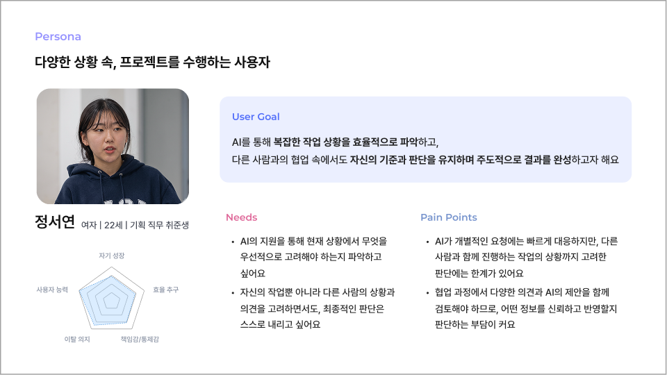
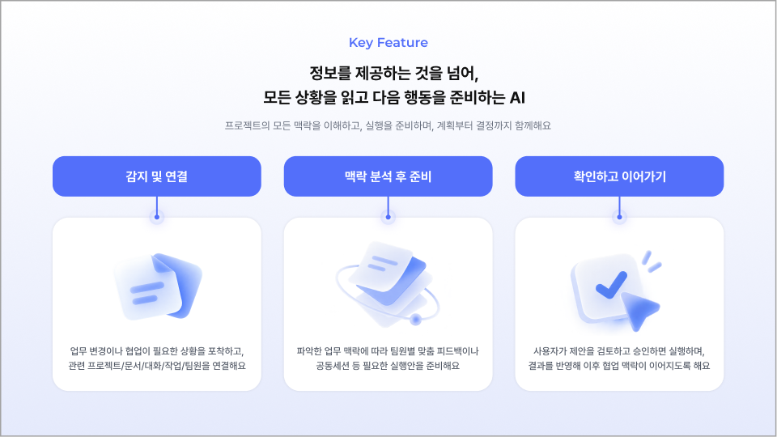
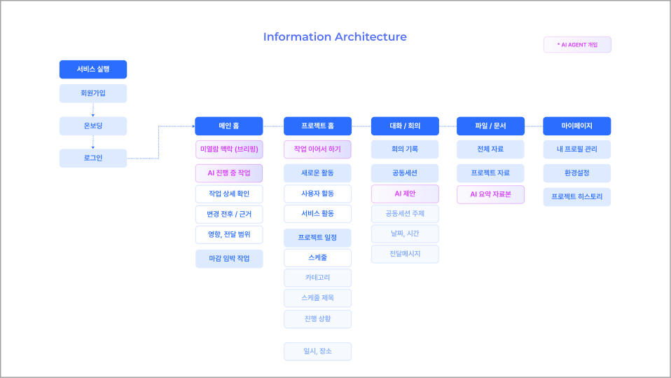
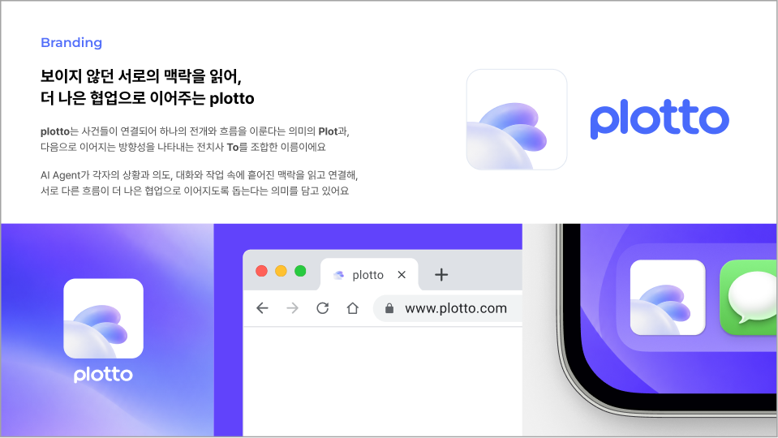
디자인
시나리오 영상 보기핵심 기능과 사용자 흐름을 보이기 위해 페르소나별 업무 시나리오를 바탕으로 와이어프레임을 설계했습니다. 사용자가 어떤 맥락에서 AI의 도움을 받고, 어떻게 업무를 확인한 뒤 다음 행동으로 이어지는지 화면 단위로 구체화했습니다. 이를 바탕으로 GUI를 제작했습니다. Plotto가 팀원별 업무 맥락을 분석해 필요한 자료와 정보를 제안하고, 프로젝트 전체 현황과 개인 할 일을 한 화면에서 파악할 수 있도록 디자인했습니다.
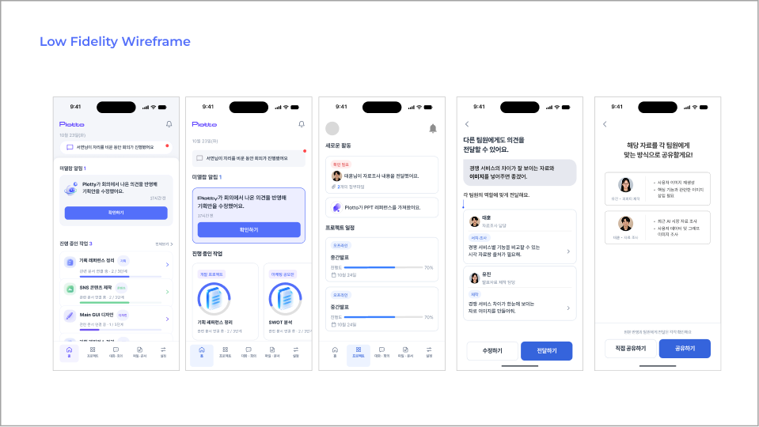
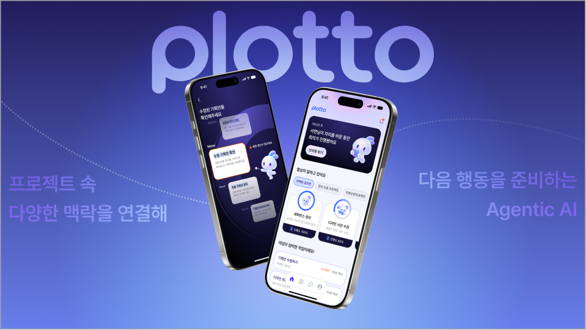
바이브 코딩과 사용성 테스트
바이브 코딩 진행 후 사용성 테스트를 통해 검증했습니다. (추가예정)
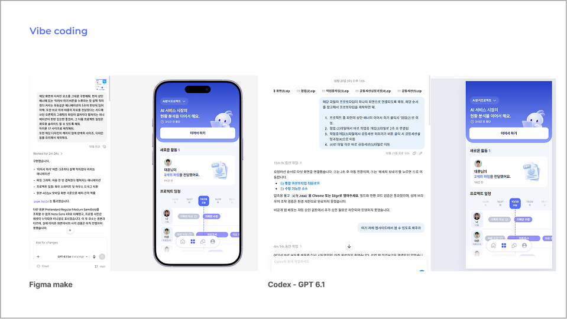
느낀점 및 후기
AI를 사용하는 행동 속 문제의 본질을 파악하고 이를 해결하기 위한 논리와 근거를 찾아가는 과정을 거쳤습니다. AI Agent와 함께 사용자 조사부터 기획, UI와 공간 구현까지 경험하며 선택의 이유를 명확히 설명하고 타인을 설득하며 공감을 이끌어내려고 했습니다. 특히 다양한 의견 속에서 문제를 바라보는 관점을 넓히고, 합리적인 근거를 바탕으로 방향성을 제시하는 능력이 디자이너로서 가장 크게 성장한 부분이라고 생각합니다.